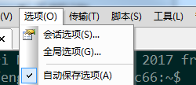
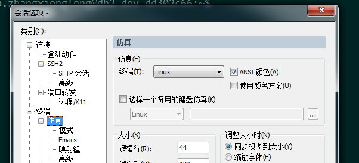
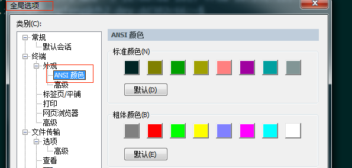
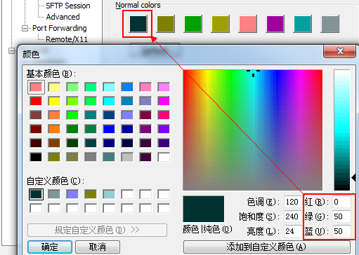
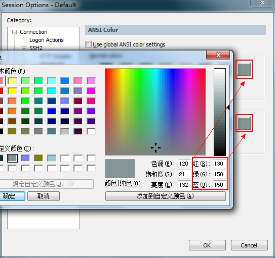
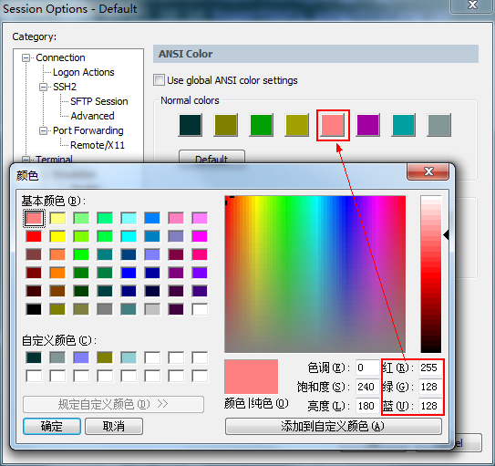
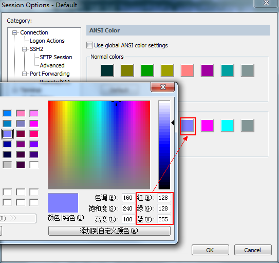
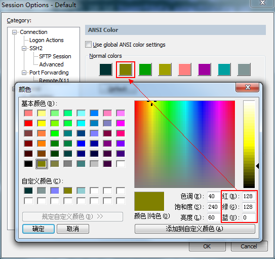
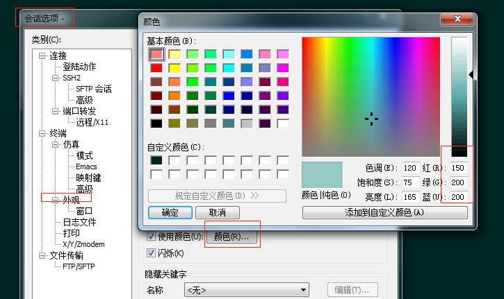
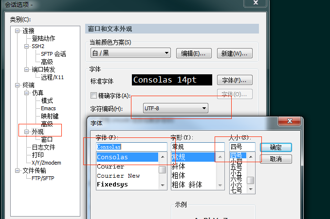

如果上天给多我一次机会使用secureCRT，我绝对还会再配此色！
第一次接触secureCRT的时候实在被其默认颜色方案亮瞎了狗眼,实在不能忍,在上网查了查相关的配色方案再结合了自己平时在gvim里面的配色爱好终于算是能看了,保存一下以后备忘吧.
后面的全局和会话选项都在菜单头中选择即可

设置 Emulation
进入Session Option中,按照图示，将Terminal模式选择Linux,同时勾选ANSI Color。

设置 ANSI Color
进入ANSI颜色设置界面进行设置如下RGB,ANSI配置会因为版本的不一致在会话或全局中显示,但最终保存都是要保存在全局选项中.

背景颜色:

字体颜色:

Vim 注释颜色:

目录颜色 RGB：

压缩文件颜色 RGB：

设置光标
在会话选项中的外观中选择如下RGB

设置字体和字符集
